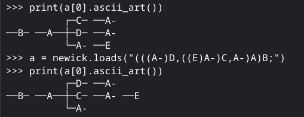
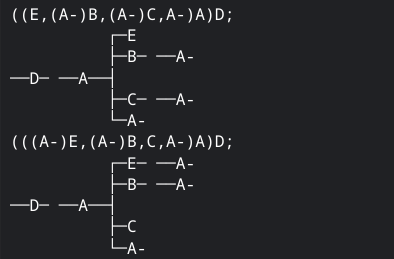
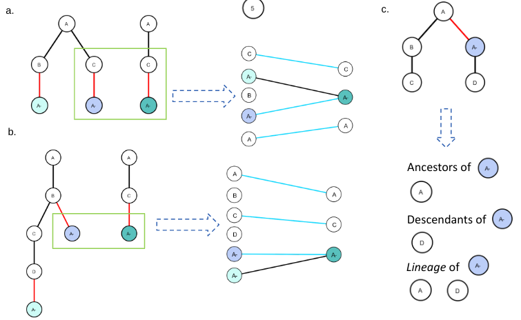
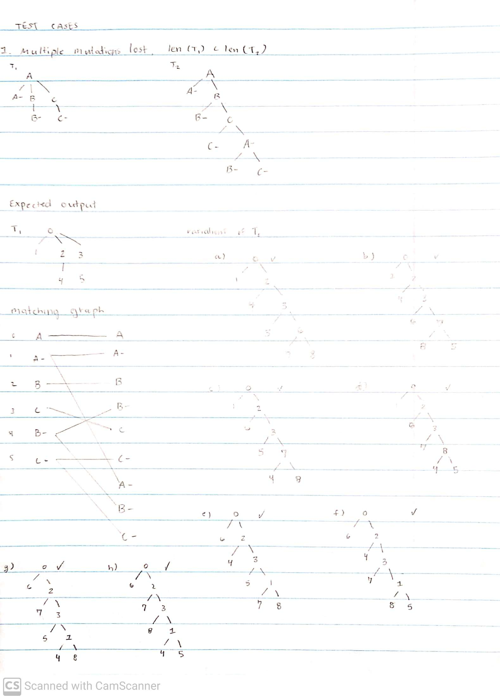
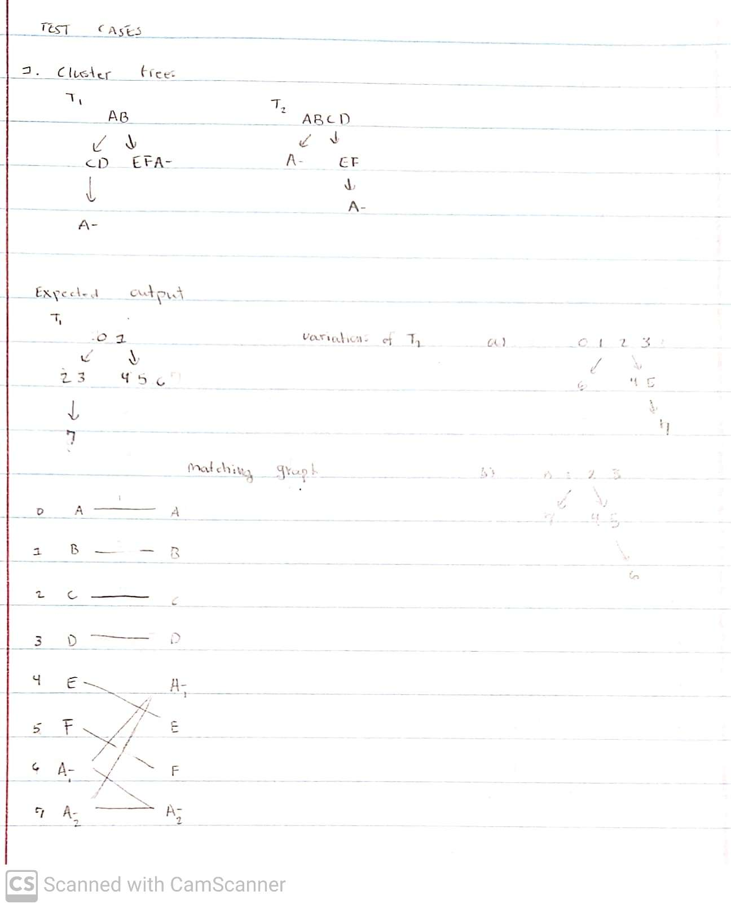
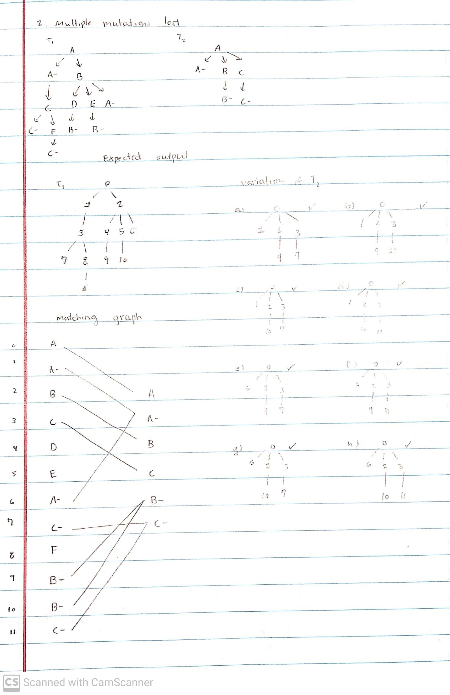

Visualizations for 'Relaxing ISA' project
Here are all the visualizations I've made from the results I gathered for the
'Relaxing ISA' project during winter break. Additionally, here's a
link to a
CSV I created that stores all the data from the experiments I've done thus far.
November 22, 2022
Revising the BIBM abstract for submission as a conference proceeding.
What do I want to add?
- A figure describing the GMD process.
- Add a caption to existing figures.
- Add a bit more about results
- Acknowledgements to Mohammed
November 23, 2022
Worked on the abstract.
- Added some more textual content
- Enhanced the existing figures
- Added more figures
- Revised based off of Layla's revisions
I spent a few hours playing around with d3 to see if I could make
visualizations in it that I could use for research. Here is a
visualization that I created and ended up putting in the abstract.
I'm actually quite proud of it.

Submitted the BIBM abstract.
November 24, 2022
Sketched up a layout for my BIBM poster.
November 25, 2022
Worked some on the BIBM poster.
Experiment
I'm evaluating 4 mutations, 3 losses, DEPTH, PCDIST
I put the results in November 15, 2022 entry.
Let's try some experiments with AD-DIST now.
Results for 4 mutations, 2 losses, LINEAGE, AD-DIST: 30615/31152
Results for 4 mutations, 3 losses, LINEAGE, AD-DIST: 6612/6642
Results for 4 mutations, 4 losses, LINEAGE, AD-DIST: 240/240
End experiment
Hours logged:. 1
November 26, 2022
I've been mainly working on code for tree simulation. I think
I've finally gotten a version that serves my purposes well. I've
pushed it to github. It is in quoc_isa/nonISA_tree_simulation/
trying_something_new/constructing_loss_trees/main.py
I'm also continuing to work on my BIBM poster.
Hours logged: 2
November 27, 2022
I've worked primarily on my BIBM poster and recording the video
of me presenting it.
I'm also working on tree simulation.
Simulation
I've verified some of the output for the simulation code for 6 mutations, 2 losses, and the code seems to work well.
There may be a small chance that the code is overcounting the number of trees in the space though, I'm not quite sure. Will
be double checking that. If not though, then...
5 mutations, 2 losses (1 mutation lost 2 times) has been simulated.
5 mutations, 3 losses (1 mutation lost 3 times) has been simulated.
TROUBLE: There is disagreement between the space of 5,3 I've generated with this code and past code.
End Simulation
Hours logged: 2
November 28, 2022
I've looked into the disagreement between datasets that I saw yesterday, and I found things explaining the problem
so the situation doesn't look as bad as I thought. Essentially, in the generation of the original dataset, I've
used parent-child distance to remove duplicate trees generated by pruferSim. However, as it turns out, parent-child
distance is completely unusable on k-Dollo phylogenies. Consider the trees below. While they are obviously different
trees, the parent-child distance between them is 0.

I have to do more investigation, and it seems like the only different between the two dataset is that the original dataset
is undercounting due to my usage of parent-child distance in the process. It seems, then, that the most accurate dataset
is the new one generated, as it doesn't undercount due to the same reason as the original dataset. I've been looking more
into the dataset to validate it, and the results seem promising so far. It may actually be enumerating all the trees in the
space of 5 gains, 3 losses.
After more investigation, I found things that were pretty big. Particularly, DISC, ancestor-descendant distance,
and CASet all say that the two trees below have a distance of 0, which is just wrong.

I'm continuing with with simulations. Specifically, trying to simulate 6 gains, 2 losses.
Hours logged: 5
November 29, 2022
Met with Layla, talked primarily about revisions for the first draft of the BIBM 2022 poster.
Also discussed some of the stuff I've been working on in terms of simulation. She wants me to
write up the algorithm for generating these trees.
I've commented more of my code, I've been working on revising the BIBM poster.
Hours logged: 3
November 30, 2022
I continued to revise the BIBM poster. I also spent alot of time
continuing with simulations. Specifically re-simulating some of the
trees to ensure I have the correct data as well as simulating new trees
with six gains, two losses.
Hours logged: 3
December 1, 2022
I stayed up pretty late working on the BIBM poster. Primarily focused
on making better visualizations, which are attached below:

Hours logged: 4
December 2, 2022
Met with Layla, continued to revise the poster.
Hours logged: 2
December 3, 2022
Worked a bit by continuing to simulate 6 mutations, 2 losses.
Also editing code to try and make the simulation process a bit faster.
Hours logged: 2
December 4, 2022
Continuing to simulate trees. Now I have the following simulated data,
but I am not yet 100% sure that it is the entire space of trees.
- 5 mutations, 5 losses ('A' mutation lost 5 times)
- 6 mutations, 4 losses ('A' mutation lost 4 times)
- 6 mutations, 3 losses ('A' mutation lost 3 times)
I tried to refine some of the simulation code to make it more
readable. It's now broken down into more functions.
Hours logged: 2
December 6, 2022
I simulated some more data, and also reviewed of of the code I wrote this summer.
I played around with it to see if the code could transform trees with multiple
mutations being lost, and it acutally seems like the code is designed to do so and
works fine for that use case.
I also did some thinking about how I can run experiments on real data.
Hours logged: 1
December 8, 2022
Explored ways that I can run experiments on real data.
Specifically skimmed through SPhyR to see what kind of real data
they used, as well as brainstormed ways that I can do the same.
Hours logged: 0.5
December 9, 2022
Thought some about simulating trees with multiple mutations being lost.
Simulated more trees where one mutation is lost multiple times. I continued
to look at literature that might help me run experiments on real data.
Specifically looked at how MLTED and CASet/DISC experimented on real data.
I created a script that allows me to add k losses of any specificied mutation.
I've also started to run experiments on some larger trees.
My compute all matchings code seems slow. I'm looking to see if I can make it any faster.
After some reviewing of the code, the slowest part of the code is where I compute all the
possible permutations of a bit vector that is n*m long, where n is number of losses in
one tree and m is the number of losses in the other. This code worked, but it's now too
slow. I'm now working to create something faster.
Hours logged: 2 hours
December 10, 2022
I've written a script to more efficiently compute GMD via brute force.
I'm now running tests to make sure that the script is correct.
Additionally, I'm cleaning up curie by deleting files I'm not using and
pushing updated code.This is part of the process of preparing my data
and source code for collaboration with Cecilia.
Hours logged: 1 hour
December 11, 2022
Goals for the day:
- Run more experiments
- Run more tests to ensure code correct of efficient_computing_all_matchings.py
- Clean up efficient_computing_all_matchings.py
I wasn't able to run more experiments, but I was able to clean up my code and and run more tests.
Hours logged: 1 hour
December 12, 2022
Met with Layla, talked about experiments. Talked about end goal of the project.
Running more experiments, cleaning code. Specifically organizing the files in the
'evaluation' folder. Also simulating some data.
Hours logged: 4 hour
December 13, 2022
Goals for the day:
- Make sure evaluation code works for when tree is comparing with itself.
- Run experiments
-
3 losses, 3 mutations, CASET+LINEAGE, 500 random trees (repeats allowed)
-
3 losses, 4 mutations, CASET+LINEAGE, 500 random trees (repeats allowed)
-
3 losses, 5 mutations, CASET+LINEAGE, 500 random trees (repeats allowed)
-
3 losses, 6 mutations, CASET+LINEAGE, 500 random trees (repeats allowed)
-
3 losses, 7 mutations, CASET+LINEAGE, 500 random trees (repeats allowed)
Achieved:
I was able to edit the evaluation code and enumerating matchings code
so that you can evaluate the heuristics when a tree is compared with itself.
In terms of experiments, I was only able to get the results of "3 losses, 3 mutations,
CASET+LINEAGE" cause the experiments ended taking longer than I thought. I was able to
start the experiments for "3 losses, 4 mutations, CASET+LINEAGE"
I've also been making
this document that plans my experiments more detailed.
Hours logged: 2.5 hours
December 14, 2022
Goals for the day:
- Look more into real data.
-
-
3 losses, 5 mutations, CASET+LINEAGE, 500 random trees (repeats allowed)
-
3 losses, 6 mutations, CASET+LINEAGE, 500 random trees (repeats allowed)
-
3 losses, 7 mutations, CASET+LINEAGE, 500 random trees (repeats allowed)
Achieved:
So I spent a lot of time looking at real data. From what I was looking at, I noticed a few things...
- Not many real phylogenies exist where the loss is actually labeled.
- When losses are labeled, there usually isn't more than 1 loss, making GMD useless.
However, despite the difficulty of finding trees where losses were represented in a meaningful way,
trees with parallel mutation might be easier to find. I will link some images here of parallel
mutations that are in the tumor phylogenies.
Hours logged: 3.5 hours
December 15, 2022
I mainly ran experiments and thought about how to change the code of GMD
in order to handle mutation clusters.
Hours logged: 2
December 16, 2022
Goals:
- Fix the experiments that broke yesterday.
- Run new experiments.
- Code up a new version of GMD that can handle mutation clusters.
Achieved:
I was able to continue running several experiments. I also began to code up
a new version of heuristicGMD that can handle mutation clusters. As of now,
the code seems to do so, but the weighting schemes still haven't been adjusted
yet to accomodate mutation clusters. I'll also need to update the enumerate matchings
code to handle mutation clusters.
Aside from that stuff, I also read more of the literature to see how I could perform
experiments on real data. I ended up reading through SCARLET, SIFIT, a bit of MP3 and
and a bit of SPHyR. I found trees that could be used to evaluate GMD in the supplementary
material of SPHyR.
Hours logged: 5
December 17, 2022
Goals:
- Verifying that the code I wrote yesterday is correct.
- Update weighting schemes to handle mutation clusters.
- Update enumerate matchings to handle mutation clusters.
- More thoroughly read through SPHyR
- Run more experiments.
Hours logged: 4
December 18, 2022
Read some literature on colorectal cancer and its evolutionary nature as
well as continuing to run some experiments.
Hours logged: 2
December 19, 2022
Ran some experiments. Did more work on fixing the code to account
for the case of when multiple mutations are lost in enumerate matchings.
Hours logged: 2
December 20, 2022
I had to take care of several edge comparisons in the brute force GMD code.
I also ran several experiments.
Hours logged: 3
December 21, 2022
Ran some experiments.
Hours logged: 0.5
December 22, 2022
Created some test cases for clusterEnumerateMatchings code. The test
cases are pictured below. It passed all three test cases.



I also ran some experiments.
Hours logged: 1
December 22, 2022
I am running some experiments on 5 muts, 2 loss 'A', 2 loss 'B'. This
is the first time I am using clustersHeuristicGMD and clusters_enumerate_matchings
code as part of the evaluation process. After the experiments are done, I intend
on verifying them to ensure correctness.
I briefly looked over the results of the experiments, and they looked correct.
Aside from that, I also commented and cleaned some code for better documentation.
Hours logged: 1